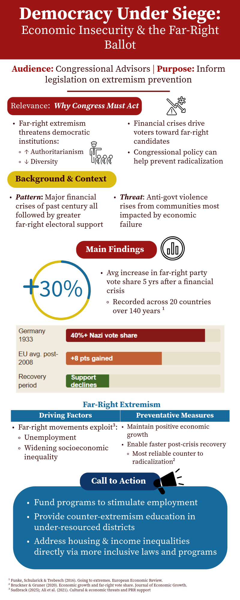
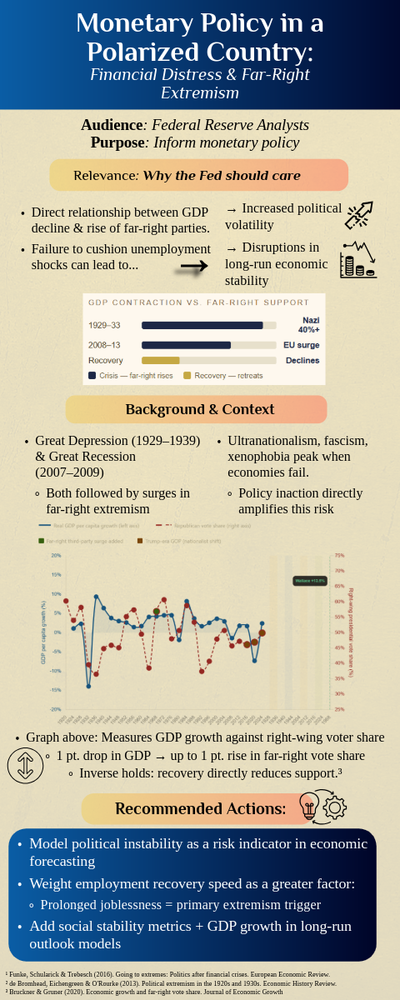
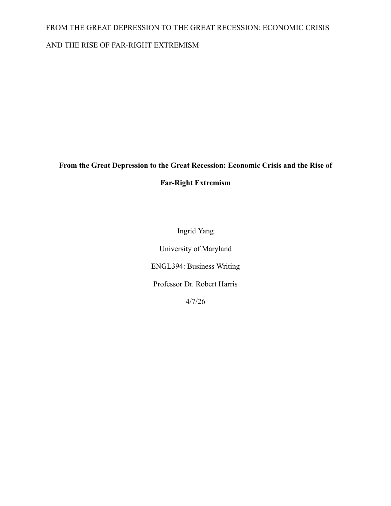
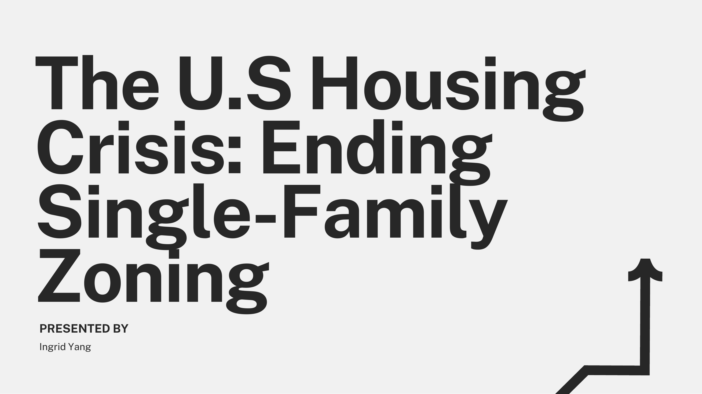

Research, writing, and data analyses on the economics behind housing, politics, and public policy. Other fun stuff too!
I'm a student at the University of Maryland studying economics, mathematics, and data science. My interests range from socioeconomic issues and public policy to the arts and humanities, along with the business in between.
I love to create and build things: county-level housing models, listening-pattern pipelines, and a handful of side projects driven by music and genuine curiosity. In my free time, I enjoy listening to, playing (guitar, piano, and bass), and producing music, going to concerts, and keeping active through tennis and hiking.
An end-to-end geospatial analytics pipeline merging USDA ERS and US Census Bureau county-level datasets across ~3,200 US counties to analyze relationships between education, poverty, and housing affordability.
A personal data analytics pipeline authenticating via OAuth 2.0 to extract Spotify library metadata, computing Herfindahl-Hirschman Index (HHI) and Shannon diversity indices to track listening trends over time.
A companion data pipeline to my research review on economic crises and far-right political support. Combines cited findings from Funke, Schularick & Trebesch and Brückner & Grüner with a century-long GDP growth vs. far-right vote share time series to visualize the relationship.
A companion data pipeline to my presentation on ending single-family zoning. Charts a century of rising residential segregation alongside a Minneapolis case study, comparing housing approvals and rent growth against five peer Midwestern metros after the city ended single-family-only zoning in 2019.
I'm passionate about policy and its intersection with economics and politics, and think being able to adapt content for different audiences is a very important form of communication.
I produced two infographics for my professional writing course as part of a multimodal rhetoric assignment, in which I selected two distinct audiences based on a topic of my choosing. The topic I researched was the relationship between economic insecurity and the rise of far-right extremism, a subject I find interesting and very relevant to our current sociopolitical climate. These infographics provide meaningful insights into significant economic and political trends in the U.S. and globally, highlighting my ability to convey complex information, synthesized from peer-reviewed research articles, to various professional audiences in a visually engaging and accessible format. The Congressional infographic emphasizes the urgency of the issue alongside its ethical concerns, while the version for the FED has a more analytical, data-driven theme; each choice reflects the different institutions' objectives and culture.

This infographic was designed for Congressional advisors: the research was framed around the need for legislative action to boost employment and prevent extremist, anti-democratic activity.
View infographic ↗
This infographic was tailored for analysts at the FED: I connected data on major financial crises to policy concerns, offering ways for the FED to better address these issues.
View infographic ↗
I conduced research examining the relationship between economic downturns and the growth of political extremism, particularly far-right extremism as seen primarily in the West. This is a research review article I wrote, synthesizing the findings of political scientists, historians, and professors from various global institutions into a brief, yet nuanced, analysis of the issue.
View PDF ↗
Analyzing academic research and data on the U.S housing market, I describe one of the largest contibuters to the housing crisis, single-family zoning, and review the various reforms and solutions that ordinary individuals, as well as our state, local, and federal governments, can implement to address the issue. I strongly believe everyone deserves housing and that policy reforms are needed to increase equity and affordability. This presentation was created using Canva and showcases my ability to present dense, important information in an engaging, convincing way; an accessible call to action.
View PDF ↗This is an exerpt from a paper I wrote for my religious studies class, in which I attempt to define relgion as a universal phenomenon based on five primary components using the "family-resemblance" approach. I constructed my own definition of religion after engaging with a variety of religious scholarly writings, theories, and frameworks. The full essay applies my definition to Buddhism, Hinduism, and Islam, also examines Judaism, and explores the idea of religious institutions as systems of power. I find religion to be one of the most interesting human phenomena and am always eager to learn more about it. This piece combines my own subjective experiences and preconceptions of religion with perspectives from various religious scholars. The included excerpt features the more reflective, slightly more personal side of my writing. It underscores the critical thinking involved in taking an entire semester's worth of content: throughout the course and the span of this assignment, I analyzed vastly different types and approaches to religion, from which I collected, compared, and contrasted the details provided by each author.
What is religion? I entered this semester with vague notions about the term’s meaning, not having given it much deeper thought. I learned about a few of the major “world religions” in required social studies classes before college, and once turned to Buddhism during quarantine in search of a solution for my overwhelming teenage angst. Most of my generalizations on religion, however, were tied back to my limited encounters with Christianity. I remember reading Sergio Cariello’s The Picture Bible in first grade, admiring the action, the attention to detail, and bold colors in every illustration. My family was never religious – the fact that we possessed a picture bible was probably a larger reflection of Christian influences in American culture and my family’s weak attempt to assimilate. In dire situations – mixed signals from a crush, for example – I’d sometimes lie in my bed and pray to God; to the imagination of an old, wise, silver-bearded Caucasian man peering down on me from the sky. But enough about my scattered religious background, let’s return our focus to the prompt.
Due to the immense diversity of religions that exist or have existed across the globe, combined with the many – often conflicting – perceptions of religion by scholars throughout time, it’s rather difficult to come up with a singular cohesive definition that successfully encompasses all religions. However, for the sake of this assignment I will attempt to do so. I would like to characterize religion as a universal phenomenon with five primary components: The first component, the belief in some form of Sacredness, is often the main marker many scholars use in differentiating religious activity from profane activity. Mircea Eliade would argue that religion originates from the sacred; not only is sacred experience “real” or human, but the Sacred itself is real and universal, as human nature innately compels us to seek and access it; the core of religion is the Sacred (2025.02.10, 17-18). Second, the potential for and existence of individual religious consciousness, allows us to inspect religion as a phenomenon that occurs within individuals’ own consciousness and alters it, imbuing it with a “profound sustaining knowledge” (2025.01.27, 2). William James’ works on religious mysticism focuses on personal religious experience, claiming that the latter is rooted in mystical states of consciousness (James, 318). Psychological research on religion views one’s mind as “the locus of religion”(Soliman et al, 852), and suggests that people interpret God’s actions and shape their understanding of the supernatural/divine–the Sacred–via their sensorimotor capacities and own bodily experiences (Soliman et al, 854). Third, ritual/forms of reverential activity, are typically how religions physically and culturally express their beliefs, principles, and practices. Historian Jonathan Z. Smith reiterates missionary Joseph de Costa’s description of religion as “the belief system that results in ceremonial behavior”(Smith, 270). Most of the world’s art, architecture, traditional music and dance, cultural norms, and the U.S’s holidays are popularized and institutionalized performances of religious ritual. Fourth, religion acts as a guide for morality and social order. The case for this is widespread, as we can observe how religion has historically and continues to shape not only individual behavior and ethics, but the laws and functioning of society. David Brooks, a Jewish-Christian Canadian-American writer, argues that the first movement of faith or religion is “the desire to become a better version of yourself” and the second is “the movement to heal the world”(Brooks, 8). Soliman and his team found through their experiments that a religion’s followers’ “synchronous activities… perform the same function in fostering group cohesion”(Soliman et al, 860). The fifth and final component, an organized structure centered around a specific doctrine(s), frames religion as a system that operates on a set of tenets followers are largely expected to adhere to, thus creating the structures people use to learn about and categorize different religions. Religious doctrines are often officialized via scriptures and promulgated through formal written or oral traditions. Religions can flood one’s life with meaning and direction via a religious worldview that elucidates “what exists, what can be known, what should be valued, how one should behave, and what the immediate and ultimate goals of life ought to be” (Soliman, 859). Not every religion must share all these components equally or even possess all five elements, and while many religions share similarities in their possession of certain components, their interpretations, beliefs, and practices diverge; there is no singular component that determines whether something is or is not a religion. For convenience, most religions should meet at least a few of the criteria listed above, as leaving the definition too loose might blur the lines between religion and something else Therefore, I’d identify my definition as a family-resemblance approach. The four religions I will be focusing on the most in this essay are Buddhism, Hinduism, and Islam.
Buddhism would qualify as a religion in accordance with my definition. To begin with, it assumes an ultimate truth alongside a higher reality based on the Buddha’s dharma (Deming, 111), the ultimate goal of earthly existence being reunion with the divine (2025.03.31, 2). The Buddha is held sacred among his followers as his teachings on suffering, on nirvana/enlightenment, and his recorded life are revered and form the basis of all practice. Soliman states that “at the core of many religions, ideation is the belief in a parallel reality inhabited by immaterial agents; the possibility of transcending the physical body both during and after this life; and a belief in the causes, effects, and forces outside the physical world”(Soliman et al, 852). I’d consider that such transcendance and ideation of some other “immaterial” world beyond the physical, scientific plane of existence constitutes a belief in a form of Sacredness, a higher power, space, or universe that isn’t inherently tangible for ordinary beings; the unifying aim of Buddhism being enlightenment, reaching a level of being on par with the Buddha, is precisely that. The steps for accomplishing this are laid out and founded in the Four Noble Truths, the Eightfold Path, and the Three Jewels (the Buddha, the Sangha, the Dharma) (Deming, 73), which have largely been learned through the Pali Canon and Abhidharma. These tenets and the scriptures they’re found in are central to the organization and structure of Buddhism and its practices, and can be labeled as religious doctrines since they propagate a religious worldview aligned with the Buddha. Arisen from these teachings are certain “moral rules,” sila, and the more well-known concept of karma, as many Buddhists believe that “morality is the gateway to truth and wisdom”(Deming, 98); a major example of Buddhism directing its followers’ ethics and behavior. There’s also the more recent development of “engaged Buddhism”(92), which author Will Deming describes as Buddhism’s shift toward social activism. Aside from the philosophical takeaways of Buddhist teachings in texts on attaining nirvana, one typically must perform certain rituals as well, one of the most essential practices on the path to Bodhisattva being meditation. Furthermore, in Buddhist societies/countries, a major part of their culture involves veneration of the Buddha as expressed through holy ceremonies, puja, festivals, and coordinated temple visits (Deming, 103); fulfills the ritual/reverential activity component of my definition. Lastly, Buddhism by nature is grounded in individual religious consciousness, as its methods to enlightenment innately influence personal meditative and scholarly practices, reflection, and one’s inner relationship with the Divine and perception of the ultimate reality. Part of the Noble Eightfold Path in right contemplation, samadhi, where one seeks to cultivate “a sense of blissful inner peace”(2025.03.31, 9).